📖 الدرس: الدرس 1: جهازا الغدد الصم والتكاثر
Grade 8 - Semester 2 Science • 13 Scientific Diagram(s)
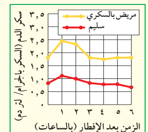
📝 Question 1: Short Question (سؤال قصير)
What is the blood sugar level of a diabetic patient at 0 hours after breakfast?
Answer: Approximately 1.9 grams/liter.
🔘 Question 2: Multiple Choice (اختيار من متعدد)
🔍 Diagram-Based
At what time after breakfast does the blood sugar level of a diabetic patient peak?
Correct Option: (A) • The blood sugar level of a diabetic patient peaks at approximately 2.5 grams/liter at 1 hour after breakfast.
💡 Question 3: Scientific Reasoning (سؤال تعليلي)
Explain why blood sugar levels differ between a diabetic patient and a healthy individual after breakfast.
Explanation: Blood sugar levels differ due to the body's ability to regulate glucose. A healthy individual has a functioning insulin response that helps lower blood sugar levels after eating, while a diabetic patient may have impaired insulin production or response, leading to higher and prolonged blood sugar levels after meals.
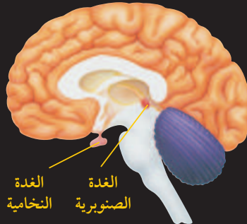
📝 Question 1: Short Question (سؤال قصير)
What are the two endocrine glands shown in the diagram of the human brain?
Answer: The two endocrine glands are the Pituitary Gland (الغدة النخامية) and the Pineal Gland (الغدة الصنوبرية).
🔘 Question 2: Multiple Choice (اختيار من متعدد)
🔍 Diagram-Based
Which gland is located inferior to the thalamus and anterior to the brainstem?
Correct Option: (A) • The Pituitary Gland is specifically located inferior to the thalamus and anterior to the brainstem, as indicated in the diagram.
💡 Question 3: Scientific Reasoning (سؤال تعليلي)
Explain the role of the Pituitary Gland in the endocrine system.
Explanation: The Pituitary Gland, often referred to as the 'master gland', plays a crucial role in regulating various hormonal functions in the body. It secretes hormones that influence growth, metabolism, and reproductive processes. By releasing hormones into the bloodstream, it controls other endocrine glands, such as the thyroid and adrenal glands, thereby maintaining homeostasis and coordinating bodily functions.
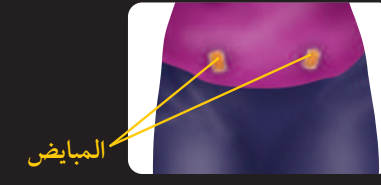
📝 Question 1: Short Question (سؤال قصير)
What are the small yellowish structures labeled in the diagram?
Answer: The small yellowish structures are the ovaries.
🔘 Question 2: Multiple Choice (اختيار من متعدد)
🔍 Diagram-Based
Which part of the female reproductive system is indicated by the label 'المبايض' in the diagram?
Correct Option: (A) • The label 'المبايض' translates to 'The Ovaries', which are the correct answer.
💡 Question 3: Scientific Reasoning (سؤال تعليلي)
Explain the role of the ovaries in the endocrine system.
Explanation: The ovaries are responsible for producing hormones such as estrogen and progesterone, which regulate various functions in the female reproductive system, including the menstrual cycle and pregnancy. They also play a crucial role in the development of secondary sexual characteristics.
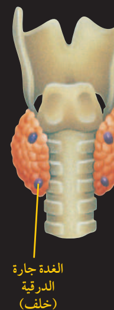
📝 Question 1: Short Question (سؤال قصير)
What are the two main glands depicted in the diagram?
Answer: The thyroid gland and the parathyroid glands.
🔘 Question 2: Multiple Choice (اختيار من متعدد)
🔍 Diagram-Based
What does the yellow line in the diagram point to?
Correct Option: (B) • The yellow line points to the parathyroid gland, as indicated by the Arabic label next to it.
💡 Question 3: Scientific Reasoning (سؤال تعليلي)
Explain the anatomical relationship between the thyroid and parathyroid glands as shown in the diagram.
Explanation: The thyroid gland is depicted as two reddish-orange lobed structures located on either side of the trachea, while the parathyroid glands are smaller, blue-purple spherical structures located on the posterior surface of the thyroid glands. This anatomical arrangement indicates that the parathyroid glands are situated behind the thyroid gland, which is essential for their function in regulating calcium levels in the body.
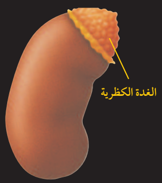
📝 Question 1: Short Question (سؤال قصير)
Answer:
🔘 Question 2: Multiple Choice (اختيار من متعدد)
Correct Option: () •
💡 Question 3: Scientific Reasoning (سؤال تعليلي)
Explanation:

📝 Question 1: Short Question (سؤال قصير)
What is the Arabic term for the pancreas?
Answer: البنكرياس
🔘 Question 2: Multiple Choice (اختيار من متعدد)
🔍 Diagram-Based
Which organ is labeled in the diagram?
Correct Option: (A) • The diagram specifically labels the organ as البنكرياس, which is the Arabic term for the pancreas.
💡 Question 3: Scientific Reasoning (سؤال تعليلي)
Explain the role of the pancreas in the endocrine system.
Explanation: The pancreas plays a crucial role in the endocrine system by producing hormones such as insulin and glucagon. Insulin helps regulate blood sugar levels by facilitating the uptake of glucose into cells, while glucagon works to increase blood sugar levels when they are too low. This balance is essential for maintaining homeostasis in the body.
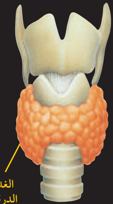
📝 Question 1: Short Question (سؤال قصير)
What is the anatomical position of the thyroid gland in relation to the larynx and trachea?
Answer: The thyroid gland is located inferior to the larynx and anterior to the trachea.
🔘 Question 2: Multiple Choice (اختيار من متعدد)
🔍 Diagram-Based
Which structure is depicted in orange in the diagram?
Correct Option: (A) • The orange structure in the diagram represents the thyroid gland, which is specifically labeled in the image.
💡 Question 3: Scientific Reasoning (سؤال تعليلي)
Explain the significance of the thyroid gland's position relative to the larynx and trachea.
Explanation: The thyroid gland's position is significant as it plays a crucial role in regulating metabolism and is strategically located to influence the respiratory system (trachea) and vocalization (larynx). Its proximity to these structures allows for efficient hormonal regulation and interaction with the body's metabolic processes.
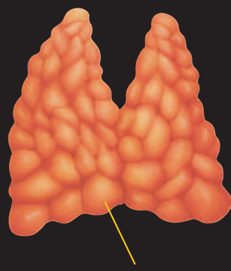
📝 Question 1: Short Question (سؤال قصير)
What is the primary function of the thyroid gland?
Answer: The primary function of the thyroid gland is to regulate metabolism through the production of hormones such as thyroxine.
🔘 Question 2: Multiple Choice (اختيار من متعدد)
🔍 Diagram-Based
What structure connects the two lobes of the thyroid gland?
Correct Option: (A) • The isthmus is the tissue that connects the two lobes of the thyroid gland, as indicated by the yellow line in the diagram.
💡 Question 3: Scientific Reasoning (سؤال تعليلي)
Explain how the structure of the thyroid gland relates to its function.
Explanation: The thyroid gland's bilobed structure allows for a larger surface area for hormone production and secretion. The textured, nodular surface indicates the presence of follicles that store thyroid hormones, which are essential for regulating metabolism. This structural adaptation enhances the gland's efficiency in hormone synthesis and release.
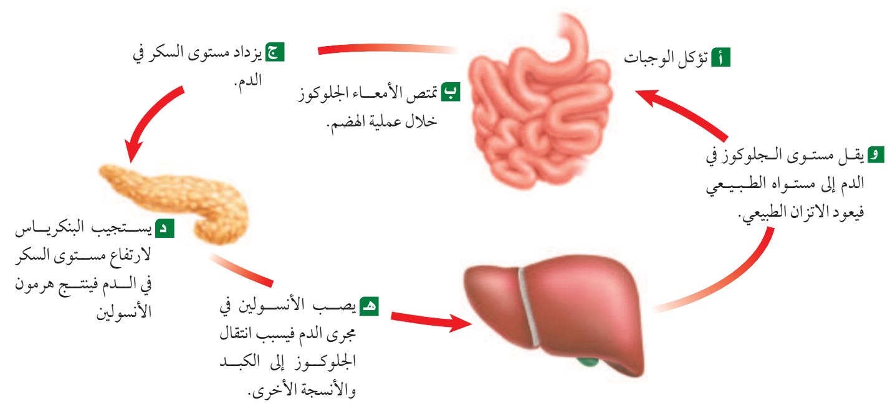
📝 Question 1: Short Question (سؤال قصير)
What hormone does the pancreas produce in response to high blood sugar levels?
Answer: Insulin
🔘 Question 2: Multiple Choice (اختيار من متعدد)
🔍 Diagram-Based
What is the first step in the process of regulating blood sugar levels?
Correct Option: (A) • The process begins with the consumption of food, which is the first step in regulating blood sugar levels.
💡 Question 3: Scientific Reasoning (سؤال تعليلي)
Explain how insulin helps to regulate blood sugar levels in the body.
Explanation: Insulin helps to regulate blood sugar levels by facilitating the uptake of glucose into the liver and other tissues. When blood sugar levels rise after eating, the pancreas releases insulin, which acts like a key to allow glucose to enter cells, thereby lowering blood sugar levels back to normal.
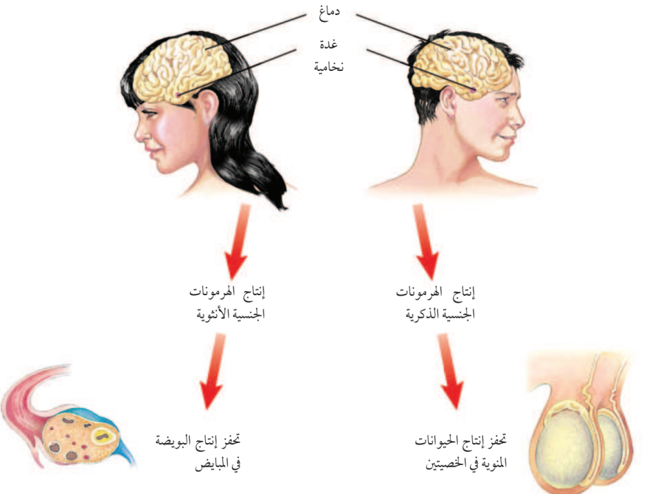
📝 Question 1: Short Question (سؤال قصير)
What is the role of the pituitary gland in hormonal regulation?
Answer: The pituitary gland initiates and controls the production of sex hormones in both males and females.
🔘 Question 2: Multiple Choice (اختيار من متعدد)
🔍 Diagram-Based
Which hormone production is stimulated by the brain and pituitary gland in females?
Correct Option: (A) • The diagram indicates that the brain and pituitary gland stimulate the production of female sex hormones, as shown by the red arrow pointing to 'إنتاج الهرمونات الجنسية الأنثوية'.
💡 Question 3: Scientific Reasoning (سؤال تعليلي)
Explain how the brain influences reproductive functions in both males and females.
Explanation: The brain, through the pituitary gland, releases hormones that regulate the production of sex hormones in both males and females. In females, this leads to the production of female sex hormones, which stimulate egg production in the ovaries. In males, it results in the production of male sex hormones, which are essential for sperm production in the testes.
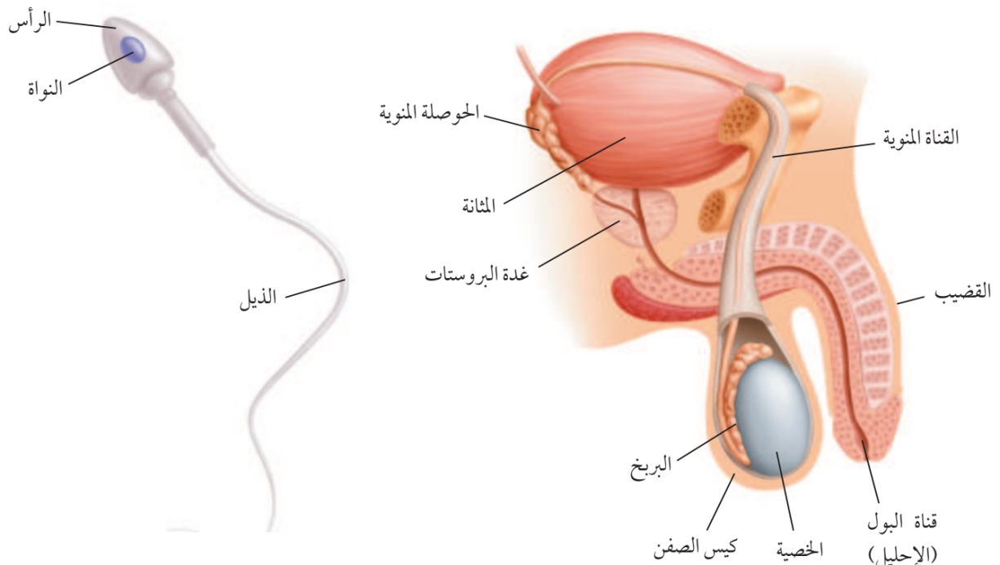
📝 Question 1: Short Question (سؤال قصير)
What are the three main parts of a sperm cell?
Answer: The three main parts of a sperm cell are the head, nucleus, and tail.
🔘 Question 2: Multiple Choice (اختيار من متعدد)
🔍 Diagram-Based
Which organ is responsible for storing urine in the male reproductive system?
Correct Option: (A) • The المثانة (Bladder) is the organ that stores urine.
💡 Question 3: Scientific Reasoning (سؤال تعليلي)
Explain the role of the tail in a sperm cell.
Explanation: The tail of a sperm cell is crucial for its motility. It propels the sperm forward, allowing it to swim through the female reproductive tract to reach and fertilize the egg.
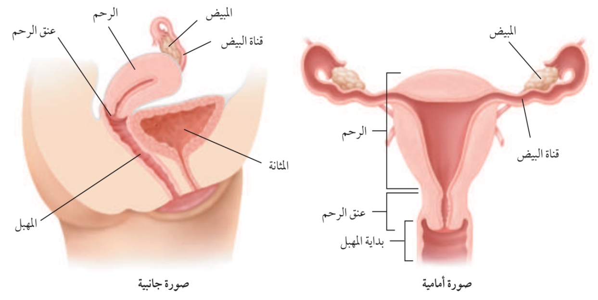
📝 Question 1: Short Question (سؤال قصير)
What is the function of the uterus in the female reproductive system?
Answer: The uterus is responsible for housing and nurturing a developing fetus during pregnancy.
🔘 Question 2: Multiple Choice (اختيار من متعدد)
🔍 Diagram-Based
Which organ is located anterior to the uterus?
Correct Option: (A) • The bladder is positioned anterior to the uterus, as shown in the lateral view of the diagram.
💡 Question 3: Scientific Reasoning (سؤال تعليلي)
Explain the role of the fallopian tubes in the female reproductive system.
Explanation: The fallopian tubes transport the ova from the ovaries to the uterus. They are also the site where fertilization typically occurs when sperm meets the egg.
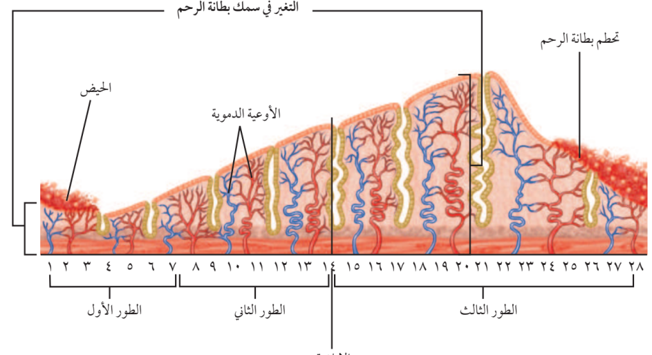
📝 Question 1: Short Question (سؤال قصير)
What is the duration of a typical menstrual cycle as shown in the diagram?
Answer: 28 days
🔘 Question 2: Multiple Choice (اختيار من متعدد)
🔍 Diagram-Based
During which phase does menstruation occur according to the diagram?
Correct Option: (A) • Menstruation occurs during the first few days of الطور الأول (Phase One), specifically around days 1-4.
💡 Question 3: Scientific Reasoning (سؤال تعليلي)
Explain how the thickness of the uterine lining changes throughout the menstrual cycle.
Explanation: The thickness of the uterine lining increases during the menstrual cycle due to hormonal changes. After menstruation, the lining begins to thicken in preparation for a potential pregnancy, peaking in thickness during الطور الثاني (Phase Two). If fertilization does not occur, the lining is shed during menstruation, marking the start of the cycle again.